![\[ \vec x_k = f \left( x_{k-1}, u_{k-1}, w_{k-1} \right) \]](form_3.png)
 and the inputs 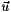 of the system. After this, find the non-linear process function 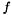 that describes the evolution of the state vector through time, that is :
and the inputs 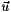 of the system. After this, find the non-linear process function 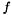 that describes the evolution of the state vector through time, that is :
where  is the process noise vector due to uncertainty and process modeling errors.
is the process noise vector due to uncertainty and process modeling errors.
Then, find the non-linear relation between your state vector and the measure vector  .
.
![\[ \vec z_k = h \left( x_{k-1}, v_{k-1} \right) \]](form_6.png)
where 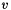 is the measure noise vector.
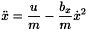
![\[ \ddot y = \frac{p}{m} \dot x^{2} - g \]](form_9.png)
where 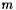 is the plane's weight (1000 kg)
 is the drag coefficient (0.35 N/m²/s²)
is the drag coefficient (0.35 N/m²/s²)
 is the lift force (3.92 N/m²/s²)
is the lift force (3.92 N/m²/s²)
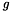 is the gravitational acceleration (9.8 m/s²)
 (the input) is the motor's thrust
(the input) is the motor's thrust
The discrete equation is:
![\[\vec x_k = \left [ \begin{array}{c} x_k \\ \\ \dot x_k \\ \\ y_k \\ \\ \dot y_k \end{array} \right] = \left [ \begin{array}{c} x_{k-1} + T \dot x_{k-1} + \frac{T^{2}}{2} \left( \frac{u}{m} - \frac{b_x}{m} \dot x_{k-1}^{2} \right )\\ \\ \dot x_{k-1} + T \left ( \frac{u}{m} - \frac{b_x}{m} \dot x_{k-1}^{2} \right ) + w_{1} \\ \\ y_{k-1} + T \dot y_{k-1} + \frac{T^{2}}{2} \left( \frac{p}{m} \dot x_{k-1}^{2} - g \right )\\ \\ \dot y_{k-1} + T \left( \frac{p}{m} \dot x_{k-1}^{2} - g \right ) + w_{2} \end{array} \right ] \]](form_15.png)
where 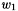 and 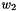 are the random variables which represent the process noise.
A station on the ground (at the origin) mesures the angle between the plane and the ground (x axis) and the distance between the plane and the station. These measures are based on the following equation:
![\[\vec z_k = \left [ \begin{array}{c} \theta \\ \\ r \end{array} \right ] = \left [ \begin{array}{c} atan(\frac{y}{x}) +v_{1} \\ \\ \sqrt{x^{2}+y^{2}} + v_{2} \end{array} \right ] \]](form_18.png)
where  and
and  are the random variables which represent the process noise.
are the random variables which represent the process noise.
![\[ A_{[i,j]} = \frac{\partial f_{[i]}}{\partial x_{[j]}} \]](form_21.png)
W is an n by nv jacobian matrix of partial derivatives, defined as follow :
![\[ W_{[i,j]} = \frac{\partial f_{[i]}}{\partial w_{[j]}} \]](form_22.png)
H is an m by n jacobian matrix of partial derivatives, defined as follow :
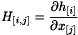
V is an m by nv jacobian matrix of partial derivatives, defined as follow :
![\[ V_{[i,j]} = \frac{\partial h_{[i]}}{\partial v_{[j]}} \]](form_24.png)
 is the number of element in state vector
is the number of element in state vector
is the number of measure
 is the number of process noise random variables
is the number of process noise random variables
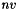 is the number of measure noise random variables
![\[ A = \left [ \begin{array}{cccc} 1 & T-T^{2} \frac{b}{m} \dot x_{k-1} & 0 & 0 \\ \\ 0 & 1-2T \frac{b}{m} \dot x_{k-1} & 0 & 0 \\ \\ 0 & T^{2} \frac{p}{m} \dot x_{k-1} & 1 & T \\ \\ 0 & 2T \frac{p}{m} \dot x_{k-1} & 0 & 1 \end{array} \right ] \]](form_28.png)
![\[ W = \left [ \begin{array}{cc} 0 & 0 \\ \\ 1 & 0 \\ \\ 0 & 0\\ \\ 0 & 1 \end{array} \right ] \]](form_29.png)
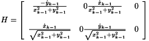
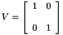
![\[\vec x = \left [ \begin{array}{c} r\cos\theta \\ 60 \\ r\sin\theta \\ 0 \end{array} \right] \]](form_32.png)
![\[ P = \left [ \begin{array}{cccc} 100^2 & 0 & 0 & 0 \\ \\ 0 & 10^2 & 0 & 0 \\ \\ 0 & 0 & 25^2 & 0 \\ \\ 0 & 0 & 0 & 10^2 \\ \\ \end{array} \right ] \]](form_33.png)
![\[ Q = \left [ \begin{array}{cc} 0.01^{2} & 0.01^{2}/10 \\ \\ 0.01^{2}/10 & 0.01^{2} \end{array} \right ] \]](form_34.png)
![\[ R = \left [ \begin{array}{cc} 0.01^{2} & 0 \\ \\ 0 & 0.01^{2} \end{array} \right ] \]](form_35.png)
makeProcess(), makeMeasure(), makeA(), makeH(), makeQ(), makeR(), makeV() and makeW(). These functions will set the value of each matrix.The first thing to do is to create your Kalman filter class.
class cPlaneEKF : public Kalman::EKFilter<double,1> { public: cPlaneEKF(); protected: void makeA(); void makeH(); void makeV(); void makeR(); void makeW(); void makeQ(); void makeProcess(); void makeMeasure(); double Period, Mass, Bfriction, Portance, Gravity; };
In this example, our Kalman filter inherits from the Extended Kalman Filter, because it's a non-linear problem ( and 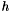 are non-linear functions) The first two template parameters are respectively the floating point type used by the filter (float or double) and the beginning index of vectors and matrices (0 or 1). There are three other template parameters to the EKFilter template class. They are explained in the next section, but they can be safely set to their default values in the first version of the filter, which are false, false and true to disable optimizations and enable bound-checking.
You should declare each functions named previously in this class. You can declare variables too.
After, code the class constructor. You can call the function setDim() here or you will call it manually in your main() function after you created the filter object. The function setDim() sets the number of states, the number of inputs, the number of process noise random variables, the number of measures and the number of measurement noise random variables. It can be used by advanced users to implement a Variable-Dimension Extended Kalman Filter (an EKF whose dimensions may change from one iteration to the other).
cPlaneEKF::cPlaneEKF()
{
setDim(4, 1, 2, 2, 2);
Period = 0.2;
Gravity = 9.8;
Bfriction = 0.35;
Portance = 3.92;
Mass = 1000;
}
In the function makeProcess(), you should use a temporary vector to store the new state vector like this :
void cPlaneEKF::makeProcess()
{
Vector x_(x.size());
x_(1) = x(1) + x(2)*Period + (Period*Period)/2*(u(1)/Mass - Bfriction/Mass*x(2)*x(2));
x_(2) = x(2) + (u(1)/Mass - Bfriction/Mass*x(2)*x(2))*Period;
x_(3) = x(3) + x(4)*Period + (Period*Period)/2*(Portance/Mass*x(2)*x(2)-Gravity);
x_(4) = x(4) + (Portance/Mass*x(2)*x(2)-Gravity)*Period;
x.swap(x_);
}
In the function makeMeasure(), you update directly the measures vector . These are the predicted measures.
void cPlaneEKF::makeMeasure()
{
z(1)=atan2(x(3), x(1));
z(2)=sqrt(x(1)*x(1)+x(3)*x(3));
}
Then, you code all other functions makeX() like this:
void cPlaneEKF::makeA()
{
A(1,1) = 1.0;
A(1,2) = Period - Period*Period*Bfriction/Mass*x(2);
A(1,3) = 0.0;
A(1,4) = 0.0;
A(2,1) = 0.0;
A(2,2) = 1 - 2*Period*Bfriction/Mass*x(2);
A(2,3) = 0.0;
A(2,4) = 0.0;
A(3,1) = 0.0;
A(3,2) = Period*Period*Portance/Mass*x(2);
A(3,3) = 1.0;
A(3,4) = Period;
A(4,1) = 0.0;
A(4,2) = 2*Period*Portance/Mass*x(2);
A(4,3) = 0.0;
A(4,4) = 1.0;
}
void cPlaneEKF::makeW()
{
W(1,1) = 0.0;
W(1,2) = 0.0;
W(2,1) = 1.0;
W(2,2) = 0.0;
W(3,1) = 0.0;
W(3,2) = 0.0;
W(4,1) = 0.0;
W(4,2) = 1.0;
}
void cPlaneEKF::makeQ()
{
Q(1,1) = 0.01*0.01;
Q(1,2) = 0.01*0.01/10.0;
Q(2,1) = 0.01*0.01/10.0;
Q(2,2) = 0.01*0.01;
}
void cPlaneEKF::makeH()
{
H(1,1) = -x(3)/(x(1)*x(1)+x(3)*x(3));
H(1,2) = 0.0;
H(1,3) = x(1)/(x(1)*x(1)+x(3)*x(3));
H(1,4) = 0.0;
H(2,1) = x(1)/sqrt(x(1)*x(1)+x(3)*x(3));
H(2,2) = 0.0;
H(2,3) = x(3)/sqrt(x(1)*x(1)+x(3)*x(3));
H(2,4) = 0.0;
}
void cPlaneEKF::makeV()
{
V(1,1) = 1.0;
V(1,2) = 0.0;
V(2,1) = 0.0;
V(2,2) = 1.0;
}
void cPlaneEKF::makeR()
{
R(1,1) = 0.01*0.01;
R(1,2) = 0.0;
R(2,1) = 0.0;
R(2,2) = 50*50;
}
Now, your filter is ready to be used. In this example, the measures and the inputs have been calculated by the generation.m Matlab script. It's a good idea to test your filter with fixed measures and inputs if you want to validate it.
After you create the filter object, you should call the setDim() function before calling the init() function. In this example, the setDim() function is called in the class constructor. The init() function sets the initial state and the initial covariance matrix.
WARNING : The vectors passed to the init() function become unusable when init() returns ! Never use those vectors after the call.
cPlaneEKF filter;
static const double _P0[] = {100.0*100.0, 0.0, 0.0, 0.0,
0.0, 10.0*10.0, 0.0, 0.0,
0.0, 0.0, 25.0*25.0, 0.0,
0.0, 0.0, 0.0, 10.0*10.0};
//Initiale estimate cout<<"angle: "<<Measure(1,1)<<"rayon: "<<Measure(2,1)<<endl; x(1) = cos(Measure(1,1))*Measure(2,1); x(2) = 60; x(3) = sin(Measure(1,1))*Measure(2,1); x(4) = 0; filter.init(x, P0);
for (i = 2; i <= NTRY; ++i) { // filter for(j = 1; j <= m; j++) z(j) = Measure(j,i); Vector u(1, F(i)); filter.step(u, z); cout << "xp(" << ":," << i<<") = " << filter.getX()<<endl; dataOutput<<"trajectory_udu(" << ":," << i<<") = " << filter.getX()<<endl; }
Call the function step() for each iteration and pass the new inputs and the new measures.
true. This will minimize some calculations. Also, you will only need to fill in diagonal elements of Q, since the other values will never be read.true. This will minimize some calculations. Also, you will only need to fill in diagonal elements of V and R, since the other values will never be read.makeBaseX() function instead of the makeX() function to fill these values. These functions are called only once at the beginning instead of once per iteration. You can used the makeBaseX() function to set values that never change in a matrix and just set the other values in the makeX() function.makeA(), makeW(), makeQ() and makeProcess() functions, then use the function makeCommonProcess() to do those calculations and save them in member variables of your own subclass. This function is always called before the others.makeH(), makeV(), makeR(), makeMeasure() and makeDZ() functions, then use the function makeCommonMeasure() to do those calculations and save them in member variables of your own subclass. This function is always called before the others.makeX() or a makeBaseX() function, there can be some execution paths where the function does not modify any matrix (for example, if there is some condition, then modify the matrix, else don't). If this is the case, then each non-mutating execution path should call NoModification() before returning, so that some calculations can be avoided.false to disable bound-checking.
makeBaseX() functions instead of makeX() functions.makeX() functions to makeBaseX() functions.false.So, the final result for this example is:
#ifndef PLANE_H #define PLANE_H #include "kalman/ekfilter.hpp" class cPlaneEKF : public Kalman::EKFilter<double,1,false,true,false> { public: cPlaneEKF(); protected: void makeBaseA(); void makeBaseH(); void makeBaseV(); void makeBaseR(); void makeBaseW(); void makeBaseQ(); void makeA(); void makeH(); void makeProcess(); void makeMeasure(); double Period, Mass, Bfriction, Portance, Gravity; }; typedef cPlaneEKF::Vector Vector; typedef cPlaneEKF::Matrix Matrix; #endif
// -------------- plane.cpp - Example of Extended Kalman filter ------------------------// // // This file is part of kfilter. // kfilter is a C++ variable-dimension extended kalman filter library. // // Copyright (C) 2004 Vincent Zalzal, Sylvain Marleau // Copyright (C) 2001, 2004 Richard Gourdeau // Copyright (C) 2004 GRPR and DGE's Automation sector // École Polytechnique de Montréal // // Code adapted from algorithms presented in : // Bierman, G. J. "Factorization Methods for Discrete Sequential // Estimation", Academic Press, 1977. // // This library is free software; you can redistribute it and/or // modify it under the terms of the GNU Lesser General Public // License as published by the Free Software Foundation; either // version 2.1 of the License, or (at your option) any later version. // // This library is distributed in the hope that it will be useful, // but WITHOUT ANY WARRANTY; without even the implied warranty of // MERCHANTABILITY or FITNESS FOR A PARTICULAR PURPOSE. See the GNU // Lesser General Public License for more details. // // You should have received a copy of the GNU Lesser General Public // License along with this library; if not, write to the Free Software // Foundation, Inc., 59 Temple Place, Suite 330, Boston, MA 02111-1307 USA // --------------------------- Example of Extended Kalman filter ------------------------// /* % A plane flights in a 2D space where the x axis is the distance traveled % by the plane and y axis is its altitude. This system can be represented % by the fallowing equations: % (This is just an example) % % xpp = F/m - bx/m * xp^2 % ypp = p/m * xp^2 - g % % where m is the plane's weight (1000 kg) % bx is the drag coefficient (0.35 N/m²/s²) % p is the lift force (3.92 N/m²/s²) % g is the gravitational acceleration (9.8 m/s²) % F is the motor's thrust % % A station on the ground (at the origin) mesures the angle between the % plane and the ground (x axis) and the distance between the plane and the station. % These measures are based and the fallowing equations: % % theta = atan2(y,x) % r = sqrt(x^2+y^2) % % The variance error matrix of the mesures is: % % R = [0.01^2 0 % 0 50^2] % % V = [1 0; % 0 1]; % % The variance error matrix of the plane's model is: WQW' % % Q = [0.01^2 0; % 0 0.01^2]; % % W = [0 0; % 1 0; % 0 0; % 0 1]; % */ #include "plane.h" #include <cmath> #include <iostream> using namespace std; cPlaneEKF::cPlaneEKF() { setDim(4, 1, 2, 2, 2); Period = 0.2; Gravity = 9.8; Bfriction = 0.35; Portance = 3.92; Mass = 1000; } void cPlaneEKF::makeBaseA() { A(1,1) = 1.0; // A(1,2) = Period - Period*Period*Bfriction/Mass*x(2); A(1,3) = 0.0; A(1,4) = 0.0; A(2,1) = 0.0; // A(2,2) = 1 - 2*Period*Bfriction/Mass*x(2); A(2,3) = 0.0; A(2,4) = 0.0; A(3,1) = 0.0; // A(3,2) = Period*Period*Portance/Mass*x(2); A(3,3) = 1.0; A(3,4) = Period; A(4,1) = 0.0; // A(4,2) = 2*Period*Portance/Mass*x(2); A(4,3) = 0.0; A(4,4) = 1.0; } void cPlaneEKF::makeA() { // A(1,1) = 1.0; A(1,2) = Period - Period*Period*Bfriction/Mass*x(2); // A(1,3) = 0.0; // A(1,4) = 0.0; // A(2,1) = 0.0; A(2,2) = 1 - 2*Period*Bfriction/Mass*x(2); // A(2,3) = 0.0; // A(2,4) = 0.0; // A(3,1) = 0.0; A(3,2) = Period*Period*Portance/Mass*x(2); // A(3,3) = 1.0; // A(3,4) = Period; // A(4,1) = 0.0; A(4,2) = 2*Period*Portance/Mass*x(2); // A(4,3) = 0.0; // A(4,4) = 1.0; } void cPlaneEKF::makeBaseW() { W(1,1) = 0.0; W(1,2) = 0.0; W(2,1) = 1.0; W(2,2) = 0.0; W(3,1) = 0.0; W(3,2) = 0.0; W(4,1) = 0.0; W(4,2) = 1.0; } void cPlaneEKF::makeBaseQ() { Q(1,1) = 0.01*0.01; Q(1,2) = 0.01*0.01/10.0; Q(2,1) = 0.01*0.01/10.0; Q(2,2) = 0.01*0.01; } void cPlaneEKF::makeBaseH() { // H(1,1) = -x(3)/(x(1)*x(1)+x(3)*x(3)); H(1,2) = 0.0; // H(1,3) = x(1)/(x(1)*x(1)+x(3)*x(3)); H(1,4) = 0.0; // H(2,1) = x(1)/sqrt(x(1)*x(1)+x(3)*x(3)); H(2,2) = 0.0; // H(2,3) = x(3)/sqrt(x(1)*x(1)+x(3)*x(3)); H(2,4) = 0.0; } void cPlaneEKF::makeH() { H(1,1) = -x(3)/(x(1)*x(1)+x(3)*x(3)); // H(1,2) = 0.0; H(1,3) = x(1)/(x(1)*x(1)+x(3)*x(3)); // H(1,4) = 0.0; H(2,1) = x(1)/sqrt(x(1)*x(1)+x(3)*x(3)); // H(2,2) = 0.0; H(2,3) = x(3)/sqrt(x(1)*x(1)+x(3)*x(3)); // H(2,4) = 0.0; } void cPlaneEKF::makeBaseV() { V(1,1) = 1.0; V(2,2) = 1.0; } void cPlaneEKF::makeBaseR() { R(1,1) = 0.01*0.01; R(2,2) = 50*50; } void cPlaneEKF::makeProcess() { Vector x_(x.size()); x_(1) = x(1) + x(2)*Period + (Period*Period)/2*(u(1)/Mass - Bfriction/Mass*x(2)*x(2)); x_(2) = x(2) + (u(1)/Mass - Bfriction/Mass*x(2)*x(2))*Period; x_(3) = x(3) + x(4)*Period + (Period*Period)/2*(Portance/Mass*x(2)*x(2)-Gravity); x_(4) = x(4) + (Portance/Mass*x(2)*x(2)-Gravity)*Period; x.swap(x_); } void cPlaneEKF::makeMeasure() { z(1)=atan2(x(3), x(1)); z(2)=sqrt(x(1)*x(1)+x(3)*x(3)); }
 1.4.5
1.4.5